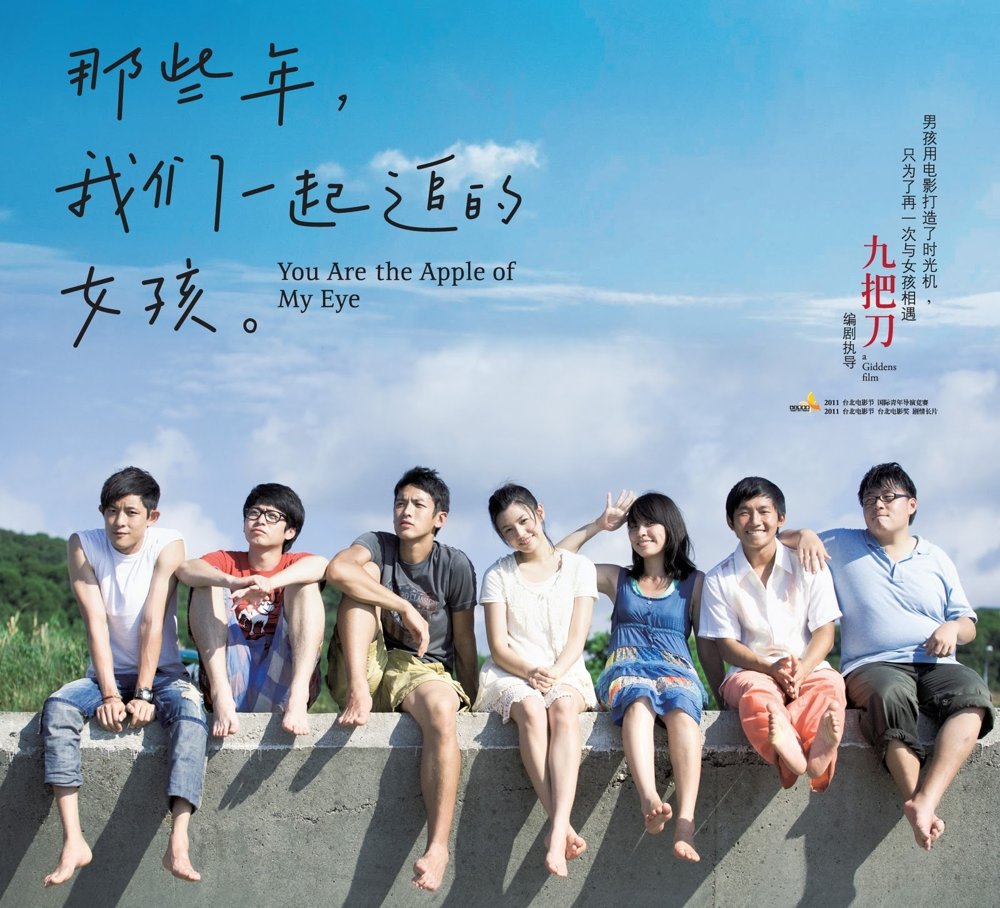

故事設定在民國83年位於彰化縣的彰化縣私立精誠高級中學，該校亦是導演兼編劇九把刀的母校。故事圍繞著調皮的男主角柯景騰（綽號「柯騰」）發展，他在這間學校裡還有幾個好友，包括喜歡耍帥但在情場常常失意的曹國勝（綽號「老曹」）、想用搞笑致勝卻總是失敗的廖英宏（綽號「該邊」）、體型偏胖但成績好的謝明和（綽號「阿和」）等人。他們的共同點是喜歡班上成績優秀、相貌甜美、並廣受男學生和老師喜愛的女孩沈佳宜，在沈佳宜身旁則有閨密胡家瑋（綽號「彎彎」，電影原創角色）伴隨。
故事簡要

儘管柯景騰和沈佳宜在高中時是同學，但柯景騰因成績糟糕、而被視為「不受控制的問題學生」，對沈佳宜也沒有興趣。有一天柯景騰在課堂上自慰被發現，結果被老師懲罰更換坐位，改坐到沈佳宜前面。後來英文課時，柯景騰在發現沈佳宜沒帶英文課本後，決定把自己的課本偷偷交給她，並站起來告訴老師忘了攜帶課本，這讓他被老師痛罵並遭到體罰。沈佳宜因此被柯景騰感動，她為了表達感謝還特地準備「愛心考卷」以作回報。沈佳宜除了鼓勵柯景騰認真學習外，還說服他在課程結束後一同留下來複習功課。在輔導柯景騰的過程中，兩人感情慢慢地增溫，柯景騰的成績也逐漸拉高。

畢業後，柯景騰在大學聯合招生考試考上國立交通大學管理科學系，而朋友謝明和考上國立清華大學經濟學系、廖英宏考上逢甲大學資訊工程學系、曹國勝考上國立成功大學化學工程學系；沈佳宜在大學聯合招生考試則因身體不適而表現失準，最後成績只能錄取國立臺北師範學院，為此她感到十分難過和沮喪。儘管兩人身隔兩地，柯景騰每天晚上都會排隊打公共電話關心失落的沈佳宜。同年聖誕節假期，柯景騰前往臺北探望沈佳宜，兩人展開他們第一次「約會」。會面期間，柯景騰詢問沈佳宜是否喜歡著他；儘管沈佳宜已經想要給予正面答覆，但擔心被拒絕的柯景騰卻說不願意聽見答案。

後來柯景騰認為男生都要在女生面前表現自己最強的一面，便在學校舉辦了「自由格鬥賽」；他還邀請沈佳宜觀賽，希望藉此展現實力並打動她。但在比賽結束後，沈佳宜指責柯景騰行為幼稚，無法理解為何要毫無來由地舉辦把自己弄傷的比賽；柯景騰則認為沈佳宜不理解他想在她面前表現勇敢的一面，兩人因而大吵一架。最後在大雨中，腦袋混亂的柯景騰痛苦地放棄追求沈佳宜，兩人結束關係。分手後的2年內，柯景騰和沈佳宜彼此都沒有接觸，期間沈佳宜曾短暫和謝明和交往5個月。直到921大地震那天，柯景騰立刻打電話給沈佳宜詢問狀況。在長時間的對談中，他們兩人感嘆沒有緣分能夠成為一對夫婦。

之後兩人恢復友誼，儘管兩人未能夠成為戀人，不過友情卻進一步昇華而成為永遠的好友。柯景騰大學畢業後考上東海大學研究所，並開始在網際網路上創作小說。2005年，沈佳宜突然透過電話告訴柯景騰說她要結婚了，在婚禮上所有的老朋友聚集在一起，並開玩笑地計畫讓沈佳宜的丈夫難堪，不過他們發現過去的情感已轉化成深厚的友誼和祝福。後來眾人聚在一起祝賀新郎和新娘，並開玩笑地說應該要能親吻新娘；沈佳宜的丈夫則說任何想親新娘的人，都要先和他親吻。

柯景騰立刻抓住新郎熱烈地親吻，甚至把他推倒在桌子上，如同會如此親吻沈佳宜般；在親吻的過程，過去成長和懊惱的回憶也逐一浮現。故事的最後，柯景騰與朋友們到打擊場打棒球，揮桿的同時，他們問道柯景騰什麼時候要開始寫小說，柯景騰說自己還沒想到題材。同時，畫面帶到咖啡店裡的柯景騰，對著筆記型電腦上，一字字地鍵入自己的心情，一部記錄著自己青春回憶的小說就此誕生。